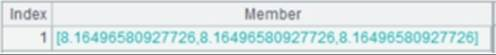
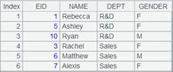

Description:
Divide a sequence into multiple segments and return the specified bordering member(s).
Syntax:
A.median(k:n,x)
Note:
Divide sequence A into n segments evenly according to its length and return the bordering member between the kth segment and the (k+1)th segment. When parameter x is present, compute the expression with members of A and then segment the sequence.
When parameter k is absent while parameter n is present, return a sequence of bordering members of all segments.
When parameters k,n are absent, if the length of the sequence is an odd, return the median member value; if it is an even, return the average value of the two members in the middle. Perform a logical division if the length of the sequence is indivisible.
Parameter:
|
A |
A sequence |
|
k |
The kth segment (1=<k<=n); return the bordering members between every two segments as a sequence when k is absent |
|
n |
The number of to-be-divided segments, which is greater than 1 and whose default is 2; can be omitted when parmeter k is absent |
|
x |
An expression; parameters k,n cannot be omitted this parameter is present |
Return value:
A number or a sequence
Example:
When A is a sequence:
|
|
A |
|
|
1 |
=[1,2,3,4,5,6,7,8] |
|
|
2 |
=A1.median() |
As all parameters are absent and the length of sequence is an even number, the function returns average value of the two members in the middle, which is (4+5)/2, that is, 4.5. |
|
3 |
=A1.median(2:3) |
The sequence is divided as follows:  Divide the sequence into 3 segments and return bordering value between the 2nd segment and the 3rd segment, which is 6. |
|
4 |
=A1.median(:3) |
As parameter k is absent, return a sequence of bordering values between every two segments, which is [3,6] . |
|
5 |
=A1.median(:10) |
The sequence is divided as follows:  Result is [1,2,3,4,4.5,5,6,7,8] . |
|
6 |
=A1.median(:,~%2) |
Divide each member of the sequence by 2 and get remainder, sort members in ascending order and generate new sequence [0,0,0,0,1,1,1,1]; as both parameter k and parameter n are absent and the length of sequence is an even number, the function returns average value of the two members in the middle, which is (0+1)/2, that is, 0.5. |
|
7 |
=A1.median(2:3,~%2) |
Divide the new sequence into 3 segments and return bordering values between the 2nd segment and the 3rd segment, which is 1. |
When A is a table sequence or a record sequence:
|
|
A |
|
|
1 |
=demo.query("select top 10 EID,NAME,GENDER from EMPLOYEE") |
|
|
2 |
=A1.median(,EID) |
Result is 5.5. |
|
3 |
=A1.median(2:6,EID) |
Result is 4. |
|
4 |
=A1.median(:6,EID) |
Result is [2,4,5.5,7,9] . |